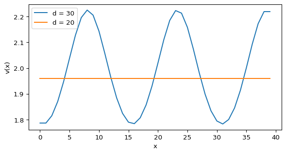

Gierer-Meinhardt Model in 1D
Module 4: Space and Pattern Formation
Reading
- Compulsory: Gierer and Meinhardt (1972).
- Recommended: (murray2003mathematical?), Sections 2.3 to 2.6.
The Gierer-Meinhardt model is an activator-inhibitor system that produces spatial patterns when diffusion and reaction act together (Gierer and Meinhardt 1972). In this laboratory you build a 1D solver for it and compare the simulation with the Turing analysis of the previous session.
In the ODE sessions, solve_ivp() handled time integration for a short state vector. Here the state is a field sampled on a grid, so you write the update rule yourself: build the Laplacian, evaluate the reactions, advance with explicit Euler, and enforce the boundary conditions.
The Model
\[ \begin{aligned} \frac{\partial u}{\partial t} &= \Delta u + \gamma \left(a - b u + \frac{u^2}{v}\right), \\ \frac{\partial v}{\partial t} &= d\,\Delta v + \gamma \left(u^2 - v\right), \end{aligned} \tag{1}\]
on \((0, L)\) with zero-flux (Neumann) boundary conditions.
- \(u(x,t)\) is the activator. Through the term \(u^2 / v\), a local increase in \(u\) reinforces its own production.
- \(v(x,t)\) is the inhibitor. Larger \(v\) reduces the ratio \(u^2 / v\) and suppresses activation.
- \(a\) is a baseline source of \(u\) and \(b\) is its linear decay rate.
- \(\gamma\) sets the reaction rate relative to diffusion.
- \(d\) is the diffusion ratio. The activator diffuses with coefficient \(1\), so \(d > 1\) means the inhibitor spreads faster.
The homogeneous steady state is \(u_* = (a+1)/b\), \(v_* = u_*^2\) (see Linearization). This is the flat state you test for pattern formation.
In short, the activator builds local peaks, and the inhibitor spreads the suppressing signal over a wider region.
What Turing Instability Means Here
Turing instability does not mean the model explodes. It means the flat state is stable to uniform perturbations but unstable to some spatially varying ones (Turing 1952).
- If every point is nudged in the same way, the system returns to \((u_*, v_*)\).
- If one region is nudged above its neighbours, that difference can grow into a pattern.
Does no Turing instability mean that the inhibitor dominates?
Not necessarily. It means the balance between activation, inhibition, and diffusion does not selectively amplify spatial modes. The inhibitor may be too strong, the activator too weak, the inhibitor may diffuse too slowly (small \(d\)), or the steady state may already be unstable for reasons unrelated to diffusion (for example \(\operatorname{tr} J > 0\)).
Diffusion does not only smooth the field. For suitable reaction parameters, a fast-diffusing inhibitor makes a subset of spatial perturbations grow instead of decay.
What the Modes Mean
The instability does not amplify every spatial perturbation equally. On a finite domain with fixed boundary conditions, only certain spatial shapes are natural building blocks. These are the modes. For Neumann conditions on \([0, L]\) they are \(\cos(n\pi x/L)\), \(n = 0, 1, 2, \dots\) (Laplacian Eigenmodes).
- Mode \(0\) is flat, with no spatial variation.
- Mode \(1\) has the longest non-constant wavelength the domain allows.
- Mode \(2\) oscillates twice as fast in space, mode \(3\) three times as fast.
- Higher modes have shorter wavelengths and finer structure.
A mode is unstable when a tiny perturbation with that shape grows in the linearized system. The leading mode has the largest growth rate, so it usually sets the early spacing of the pattern. Later, the nonlinear dynamics can merge peaks, saturate amplitudes, or shift the final profile. That is why the leading mode predicts the early pattern best, even if the long-time state looks different.
Lab Workflow
Core activity
Predict, build, validate, and test a 1D Gierer-Meinhardt solver for the two cases \(a = 0.4\), \(b = 1\), \(\gamma = 1\), \(L = 40\), with \(d = 30\) (Case A) and \(d = 20\) (Case B).
- Prediction. Use the Turing conditions and the mode scan to predict which case forms a pattern and which mode leads (Turing Numerics, Unstable Modes in 1D).
- Implementation. Build the Laplacian (Laplacian in 1D), the boundary conditions (Boundary Conditions), and the solver (Solver).
- Validation. Check the time step and grid (Time-Step Stability).
- Experiment. Animate and vary parameters (Animation).
- Interpretation and limitations. Compare with Murray’s domain-size argument (Animal Coat Patterns).
A Preview of the Result
An interactive version of this model runs at bam-applied-math-lab.streamlit.app.
References
Gierer, Alfred, and Hans Meinhardt. 1972. “A Theory of Biological Pattern Formation.” Kybernetik 12 (1): 30–39. https://doi.org/10.1007/BF00289234.
Turing, Alan M. 1952. “The Chemical Basis of Morphogenesis.” Philosophical Transactions of the Royal Society B 237 (641): 37–72. https://doi.org/10.1098/rstb.1952.0012.